One of Asia most influential home appliance and consumer electronics shows, the 2026 China Home Appliances and Consumer Electronics Expo (AWE2026 for short), opened on March 12, 2026 at the Shanghai New International Expo Centre.
Under the theme Connect AI, Protect the Future, the Chinese tech brand UGREEN used an immersive, scene-based display to show its AI-driven NAS private cloud product line, a new generation of safe fast charging, and other major new products. More than 30 digital products appeared at the same time.
The show fully presented the brand innovation in smart storage and safe fast charging. It turned the brand idea into a hands-on scene experience, and built a new ecosystem of safe, cooperative AI use that covers office, home, travel, and entertainment.
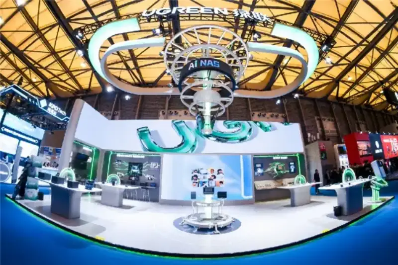
At the show, the UGREEN HiTune X8 open-ear headphones won the 2026 AWE Applan Innovation Award for its new technology and product strength. It won recognition from the industry.
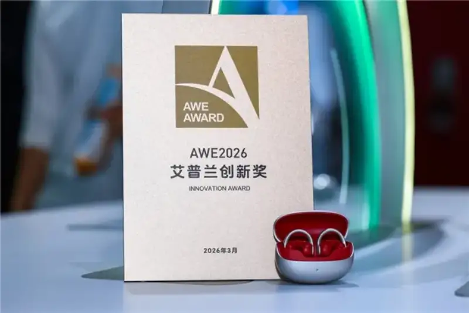
Scene highlights: immersive AI and the core dual-safety strengths
As a stage for global tech firms to show new ideas, AWE2026 brings together leading technology and consumer electronics trends. This time UGREEN built on the two basic user needs of data safety and charging safety, and turned hard technology into everyday scenes you can experience.
UGREEN AI NAS exhibition area, the core of the show, presented the new UGREEN iDX series AI NAS, which runs an LLM language model. It showed UGREEN strength in fusing AI with hardware and software. It strengthened the UGREEN lead in consumer smart storage, and upgrades the NAS from a plain storage box to a personal smart data center.
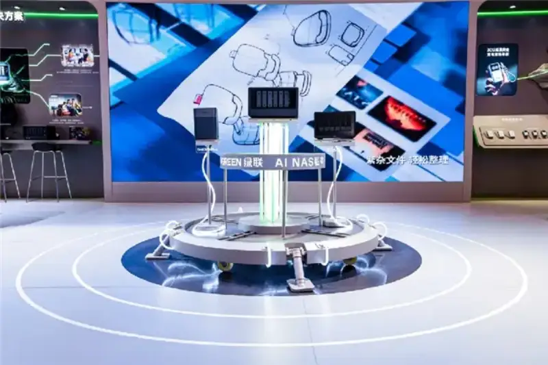
Smart storage application ecosystem delivered the full-scene solution of the UGREEN AI NAS private cloud:
Secure data storage and solutions focused on four common scenes: office work, outdoor travel, home life, and film and photography. It uses local computing for guided dialogue, smart AI photo album management, precise content search, and conversation with the Uliya AI assistant. Processing data locally builds a strong data safety line.
The data safety centre held a creator workstation. It recreated a local setup for professional film work, and used cases from extreme environments to prove the product is reliable. With pro gear on hand, it showed fast, easy connection. Full-link data encryption removes the data safety worries of creators.
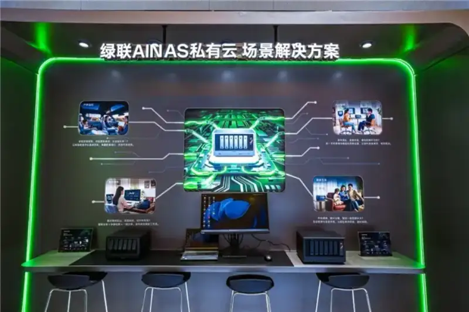
The UGREEN smart fast-charge display used a grid layout. It showed 3C-certified GaN chargers, power banks, and other new safe fast-charge products. It built the core value of charging safety into product details you can feel and try, so the safety quality is plain to see.
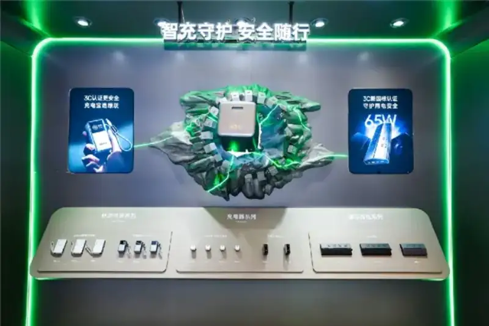
On site, a giant PowerPro unit let users top up fast. It created a light, relaxed everyday scene, so safety and efficiency fit naturally into daily life.
Major launches and strategic partnerships: wider ecosystem, full-scene reach
On the first day, UGREEN held a new product launch and announced several brand partnerships at the same time. It kept strengthening its position as a full-scene smart solutions provider.
Zhang Zhibin, UGREEN fast-charge product manager, shared the thinking and breakthroughs in UGREEN charging tech. He redefined the desktop charging experience within the UGREEN energy plan.
The new 300W eight-port charger with a display is UGREEN new desktop energy hub. It goes past the limits of a traditional charger. It both fast-charges many devices and acts as a smart desktop energy manager with a visual screen and remote app control. Charging becomes smarter, and safety becomes easier to feel, for a new desktop charging experience.
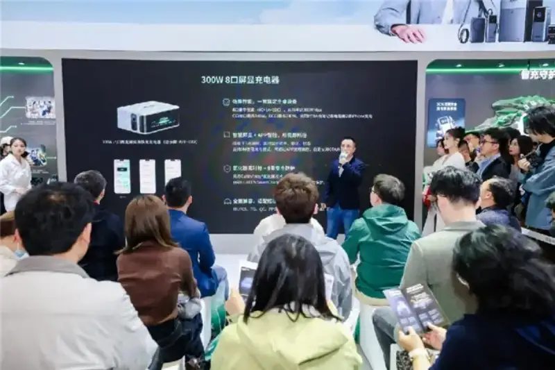
UGREEN worked with the popular digital blogger He Tongxue to launch the new generation of safe fast-charge solutions, with new convenient charging products. The new products focus on portability and safety. They fit travel and mobile office use, and balance a tiny size, high power output, and safety standards.
He Tongxue also showed his new phone bed on site. The UGREEN 45W Pocket charger powered the whole phone bed system steadily. He shared his experience with the new product, and hoped such a small, fast, safe, and reliable product would fit into more people daily lives.
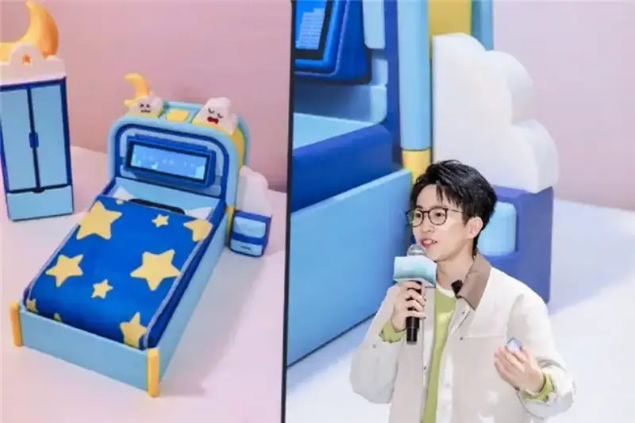
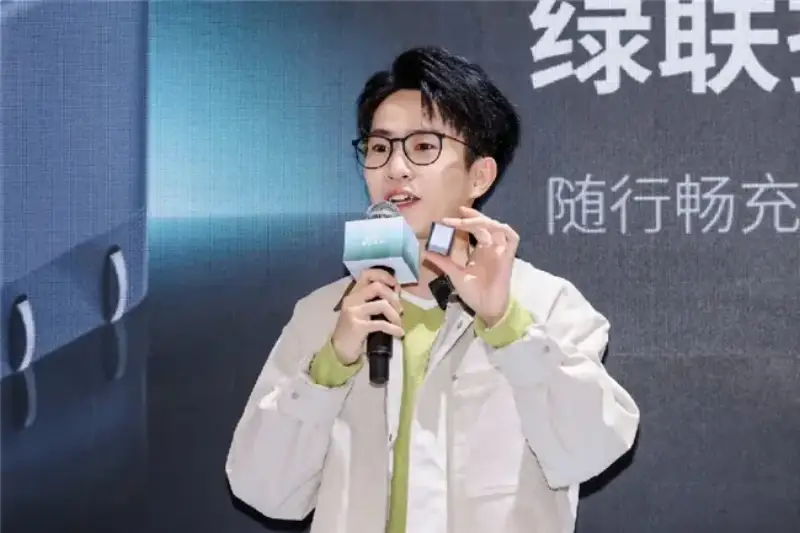
Building on its full-scene ecosystem, UGREEN officially launched the AI NAS application ecosystem and pushed cross-field partnerships at the same time.
Xie Wenkai, UGREEN AI NAS private cloud product manager, gave a deep talk at the launch. He explained the core logic of an AI-driven smart ecosystem, and showed the brand technical depth and ecosystem plan in smart storage.
At the same time, UGREEN announced its AI security ecosystem. It pairs AI scene understanding and needs prediction with local encrypted storage of security data on the AI NAS. This moves from passive recording to active protection, for a safer, smarter full-scene life.
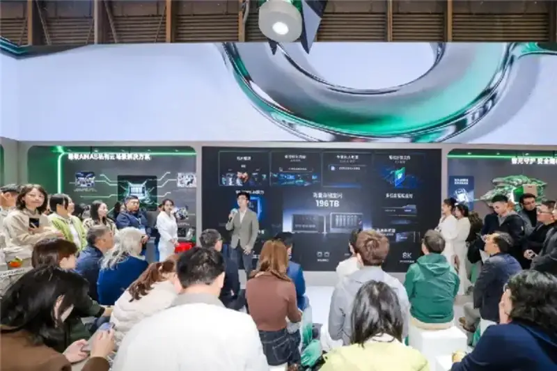
At the launch, Mr. Liu Luyu, vice chairman of the China Photographers Association, gave an address, and Mr. Wu Ping, deputy editor of China Photography News, together with Mr. Chen Xiaolin, head of UGREEN brand operations, formally announced a strategic partnership between UGREEN and China Photography News Travel China Photo.
The two sides will work together to give photographers better smart storage. Around core needs such as outdoor shooting and image management, they will offer product features that fit pro workflows, and give full-link data safety support for image work. Thanks to its smart storage and data safety, the UGREEN NAS private cloud became the recommended storage device for Travel China Photo.

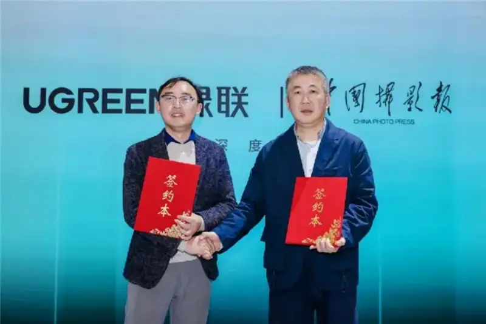
Mr. Xiang Zewei, product manager at Li Auto, and Mr. Xie Wenkai, UGREEN AI NAS private cloud product manager, announced a formal strategic partnership between UGREEN and Li Auto.
In this deal, the two sides will jointly release the UGREEN NAS private cloud car version. It links the car system seamlessly with local storage. Through shared data and scene cooperation, the car becomes an extension of digital life, for a full digital life that joins car, home, and office.
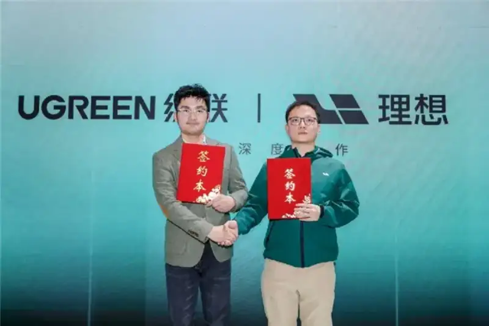
Roundtable: many views, new thinking on safety in the AI age
From fast charging to data storage, and from personal work to smart travel, UGREEN keeps building a fuller smart ecosystem. At the AWE2026 launch, UGREEN held a themed roundtable on data safety and charging safety. It explored three core topics: data safety, charging safety, and use and empowerment in the AI age.
The roundtable brought together industry media, tech content creators, and core experts. Guests included Wu Ping of China Photography News, the blogger He Tongxue, Xiang Zewei of Li Auto, Zhang Ruhuan, an Agent architect at MiniMax, and on the UGREEN side Zhou Kaijie, head of the UGREEN AI lab, and Zhang Zhibin, UGREEN fast-charge tech product manager.
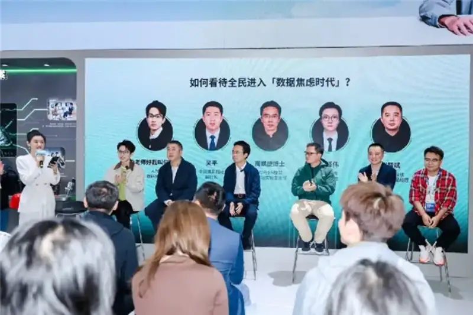
On data safety, Wu Ping, deputy editor of China Photography News, said: for every creator, the heart of storage safety is control over your own data. Build your own local data center, protect every piece of your work, and let technology serve the act of creating. Zhang Ruhuan, Agent architect at MiniMax, spoke about the recent viral crayfish case. He shared a deep integration of OpenClaw, the MiniMax large model, and NAS products, and offered new ways to manage personal data smartly in the AI age.
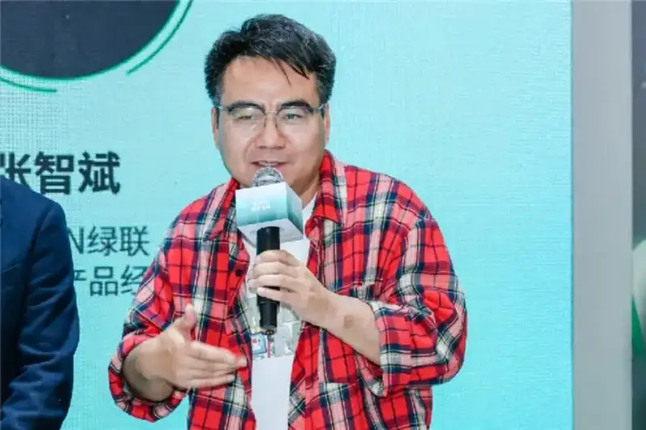
On charging safety, the blogger He Tongxue said: real safety is not protection after something goes wrong. It is never letting you worry that something could go wrong. Zhang Zhibin, UGREEN fast-charge product manager, agreed and added: UGREEN keeps turning hidden protection into care the user can feel. With warm safety, UGREEN builds a long bridge of trust with users.
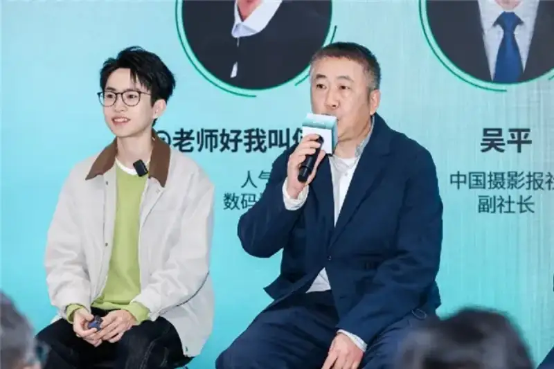
On use and empowerment in the AI age, Zhou Kaijie, head of the UGREEN AI lab, said: UGREEN defines the AI NAS by how AI makes the NAS smarter and easier to use. As a smart storage centre, adding a smart security system extends us from protecting digital assets to protecting physical space.
The roundtable produced fresh ideas on data and charging safety across different scenes. It made clear that in the AI age, data and charging safety are the core base of full-scene smart life. It also showed how the AI NAS and safe fast charging can power full-scene use.
These new ideas will guide UGREEN as it keeps safety as its base and AI as its engine, and builds tech that fits real user needs. They also add solid force to a safer, full-scene smart-living ecosystem for the whole industry.
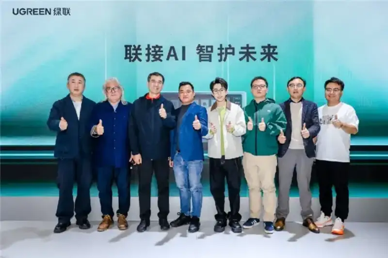
From product lines to cross-field partnerships, and from hands-on scenes to deep industry talks, UGREEN keeps working around user needs and new technology. It deepens its two core strengths of data storage and charging safety, and shows its progress openly.